★ PARAPPA — MISCELLANEOUS ★★ パラッパ — その他 ★
Assorted PaRappa the Rapper merchandise — stationery, apparel, accessories, household goods, and novelty items that don't fit the plush or figure categories.
パラッパラッパーのその他グッズコレクション。文房具、アパレル、アクセサリー、生活雑貨、ノベルティなど、ぬいぐるみやフィギュアのカテゴリーに収まらないアイテムをまとめています。
— TELEPHONE —— 電話機 —

Yellow PaRappa novelty corded landline phone with an LCD caller display, packaged on its original retail card.液晶ディスプレイ付きの黄色いパラッパ柄コード式固定電話で、オリジナルの販売台紙に取り付けられた状態。
— SALT & PEPPER SHAKERS —— ソルト＆ペッパーシェーカー —

Hand-painted ceramic PaRappa ("P") and Sunny Funny ("S") shaker pair shown front-on.手描き陶器のパラッパ（"P"）とサニー・ファニー（"S"）のシェーカーペアを正面から撮影。
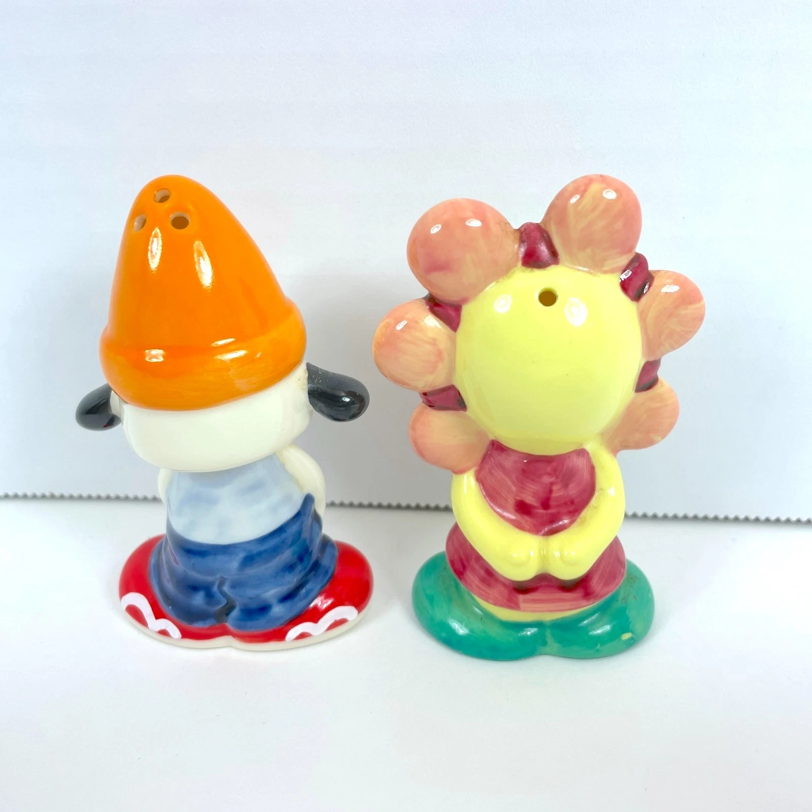
Back view of the same pair, revealing the perforated shaker holes on top of each character's head.同じペアの背面ビュー。各キャラクターの頭頂部に開けられたシェーカー穴が確認できる。

Underside view showing the rubber-plug fill holes used for refilling salt and pepper.底面ビュー。塩こしょうの詰め替えに使うゴム栓付きの注入口が見える。
— RGSTYLE HOLOGRAPHIC TAMBOURINE —— RGstyle ホログラム タンバリン —

Prismatic RGStyle tambourine printed with PJ Berri, Sunny Funny, Katy Kat and PaRappa across the holographic skin.RGstyleのプリズム加工タンバリン。ホログラム面にPJベリー、サニー・ファニー、ケイティ・キャット、パラッパがプリントされている。
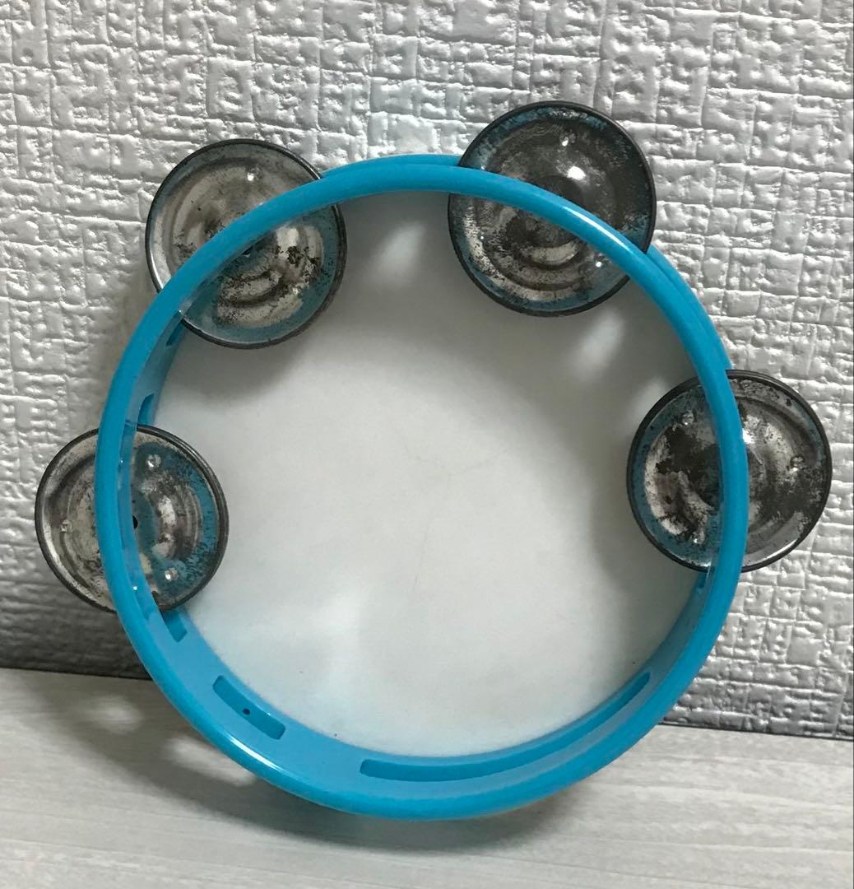
Back of the same tambourine, showing the sky-blue plastic frame and four pairs of metal jingles.同タンバリンの背面で、水色のプラスチックフレームと4組の金属ジングルが確認できる。
— CHARACTER WRISTWATCHES —— キャラクター腕時計 —

Yellow PaRappa wristwatch sealed in its character-print blister card.黄色いパラッパの腕時計で、キャラクタープリントのブリスターパックに未開封で封入されている。

Plain back of the PaRappa watch blister, with Japanese-market care text and the Made in China stamp.パラッパ腕時計ブリスターの裏面で、国内向けの取り扱い表記と「Made in China」の刻印が記載されている。
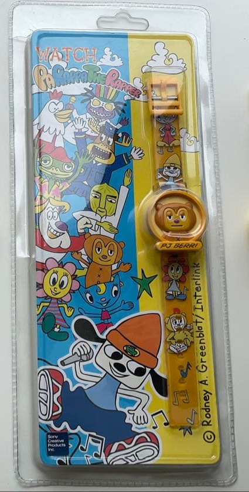
Alternate yellow PaRappa wristwatch variant, packaged on the same character-print card style.同じキャラクタープリント仕様のカードに封入された、別バージョンの黄色いパラッパ腕時計。
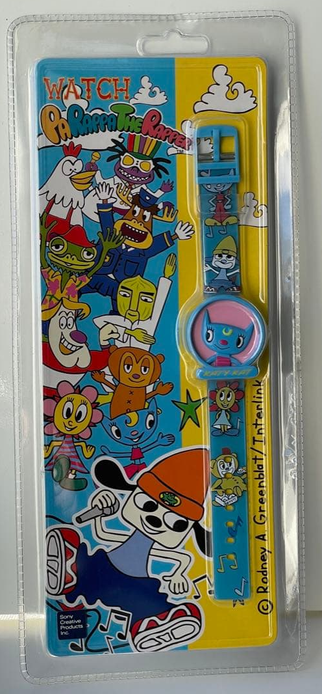
Sky-blue Katy Kat wristwatch on the matching cast-illustration blister card.水色のケイティ・キャット腕時計で、キャラクター集合イラストの台紙に封入された状態。
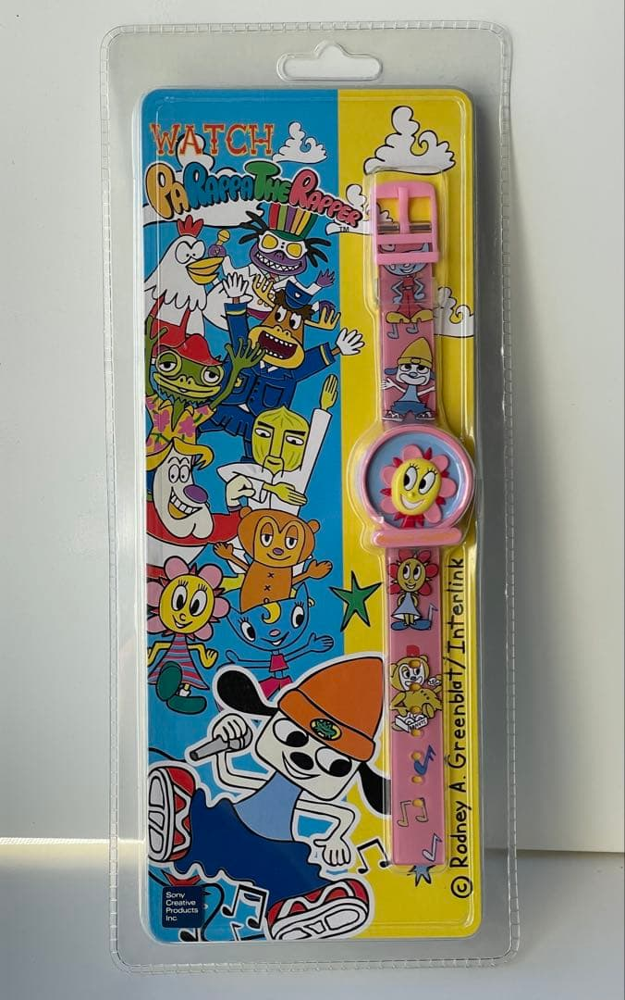
Pink Sunny Funny wristwatch on its character-print blister card.ピンクのサニー・ファニー腕時計で、キャラクタープリント台紙のブリスターパック仕様。
— LIMITED ZIPPO SET (UNIVERIFY) —— 限定ジッポーセット（ユニファイブ） —
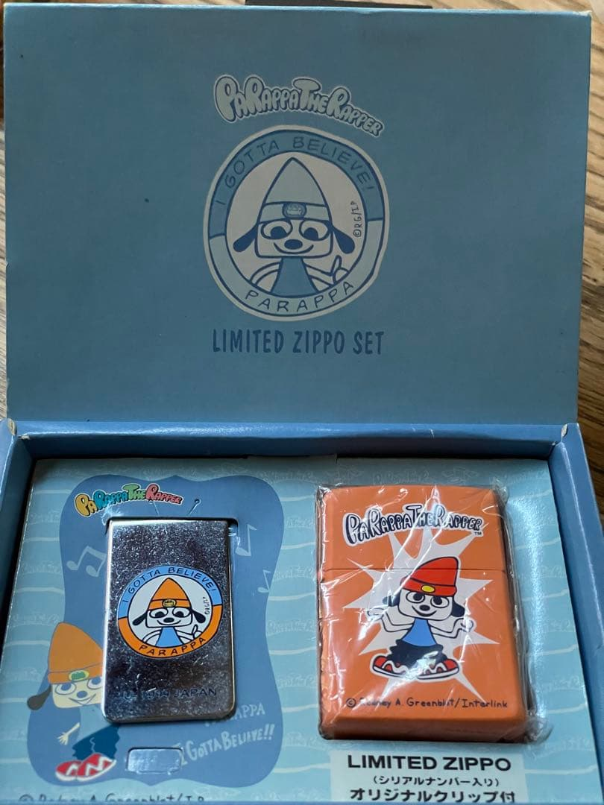
Univerify "Limited Zippo Set" presentation box opened to display its two PaRappa-engraved Zippo lighters.ユニファイブの「LIMITED ZIPPO SET」ボックスを開けた状態。中にはパラッパ刻印のジッポーライター2点が並んでいる。

Light-blue presentation-box lid printed with the silver "I Gotta Believe!! PaRappa" emblem and "Limited Zippo Set" title.水色のボックス蓋には、銀色の「I Gotta Believe!! PaRappa」エンブレムと「LIMITED ZIPPO SET」のタイトルがプリントされている。

Matte-orange Zippo with the "PaRappa The Rapper" wordmark and a starburst illustration of PaRappa, credited © Rodney A. Greenblat / Interlink.マットオレンジのジッポー。「PaRappaTheRapper」ロゴと、星のバーストを背にしたパラッパのイラストが配され、© Rodney A. Greenblat / Interlink のクレジット入り。

Companion orange Zippo engraved with the round "I Gotta Believe!! PaRappa" badge and the individual serial No. 0092.対になるオレンジのジッポーで、丸い「I Gotta Believe!! PaRappa」バッジと個別シリアル「No.0092」が刻印されている。
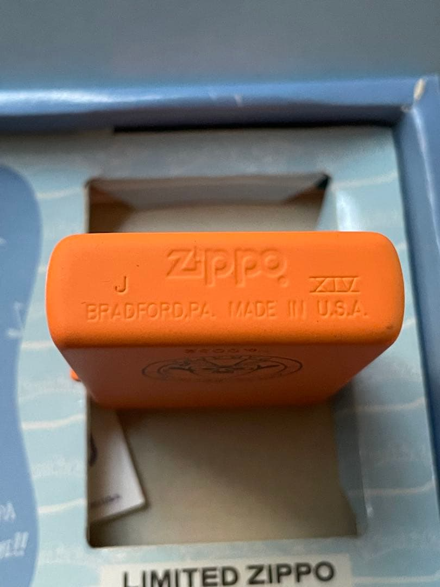
Underside of the orange Zippo showing the genuine "Zippo / Made in USA" bottom stamp.オレンジジッポーの底面で、本物の証である「Zippo / Made in USA」刻印が確認できる。
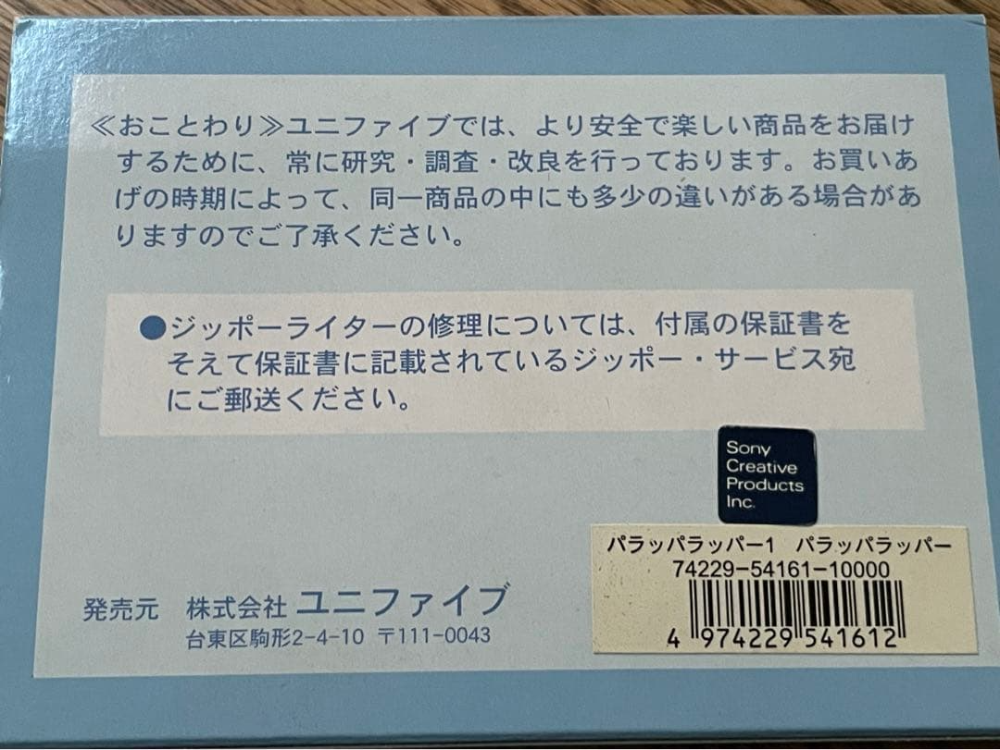
Reverse of the box with Univerify's product label, barcode, and SCP licence credit.ボックスの裏面で、ユニファイブの商品ラベル、バーコード、SCPライセンス表記が記載されている。
— SCP SILVER RING SERIES —— SCP シルバーリングシリーズ —
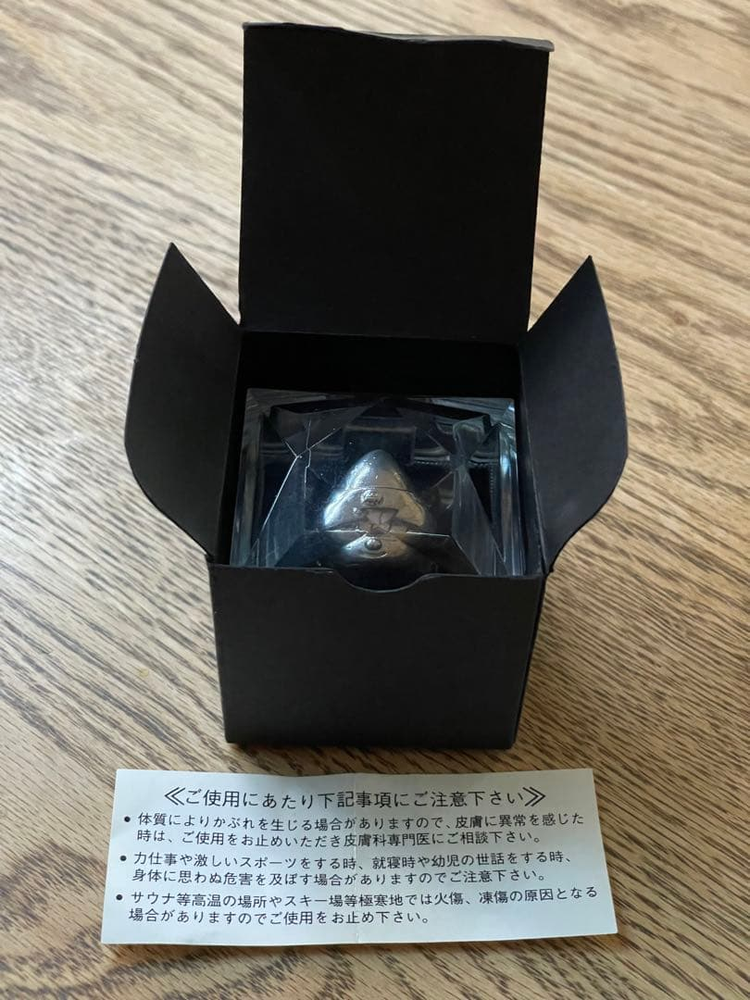
SCP silver ring presented in its original black gift box with the included Japanese care insert.SCPシルバーリングのオリジナル黒ギフトボックス収納状態で、付属の日本語取り扱い説明カードが添えられている。

Engraving close-up showing the "I gotta believe / silver 925" interior stamp that authenticates the SCP series.内側に刻まれた「I gotta believe / silver 925」の刻印クローズアップで、SCPシリーズの正規品である証となる。
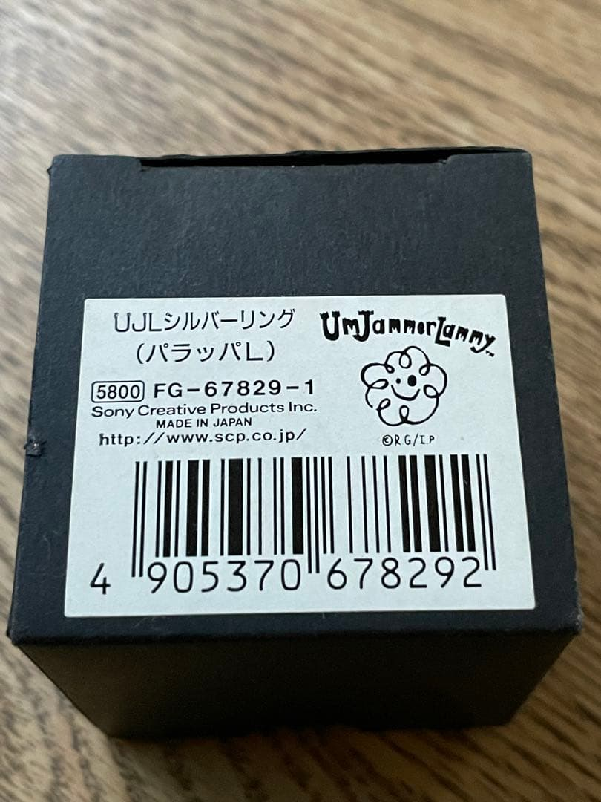
Box back with the Sony Creative Products catalogue sticker for the "UJL Silver Ring (PaRappa Ver.)" — code FG-67829-1.ボックス裏のソニー・クリエイティブプロダクツ製品シール。「UJLシルバーリング（パラッパVer.）」品番FG-67829-1の表記。

PaRappa-shape silver ring displayed in its clear acrylic stand inside the gold-foil "PaRappa The Rapper" black presentation box.パラッパ型シルバーリングが、金箔押し「PaRappa The Rapper」ロゴ入りの黒い化粧箱とアクリルスタンドにセットされた状態。

Detail shot of the same ring, with the sculpted PaRappa beanie peak on top and engraved face on the band.同リングのディテール。上部にはパラッパのビーニーの先端が立体的に造形され、リング側面には顔が刻まれている。
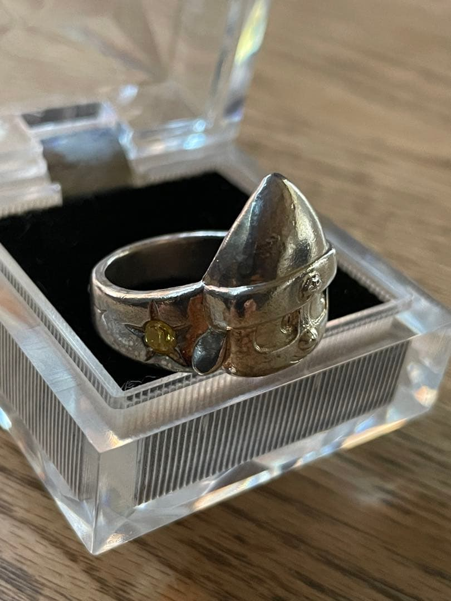
Sunny Funny version of the silver ring with sculpted petals around the bezel and a flower-bud crown.サニー・ファニー版シルバーリング。ベゼル周囲に花びらの彫刻が施され、頂部には花のつぼみがあしらわれている。

Companion ring in the series with star engravings carved across the polished band.シリーズの別バージョン。磨き上げたバンド全体に星の彫刻があしらわれている。
— PHONE STRAPS, CHARMS & KEYCHAINS —— 携帯ストラップ・チャーム・キーホルダー —
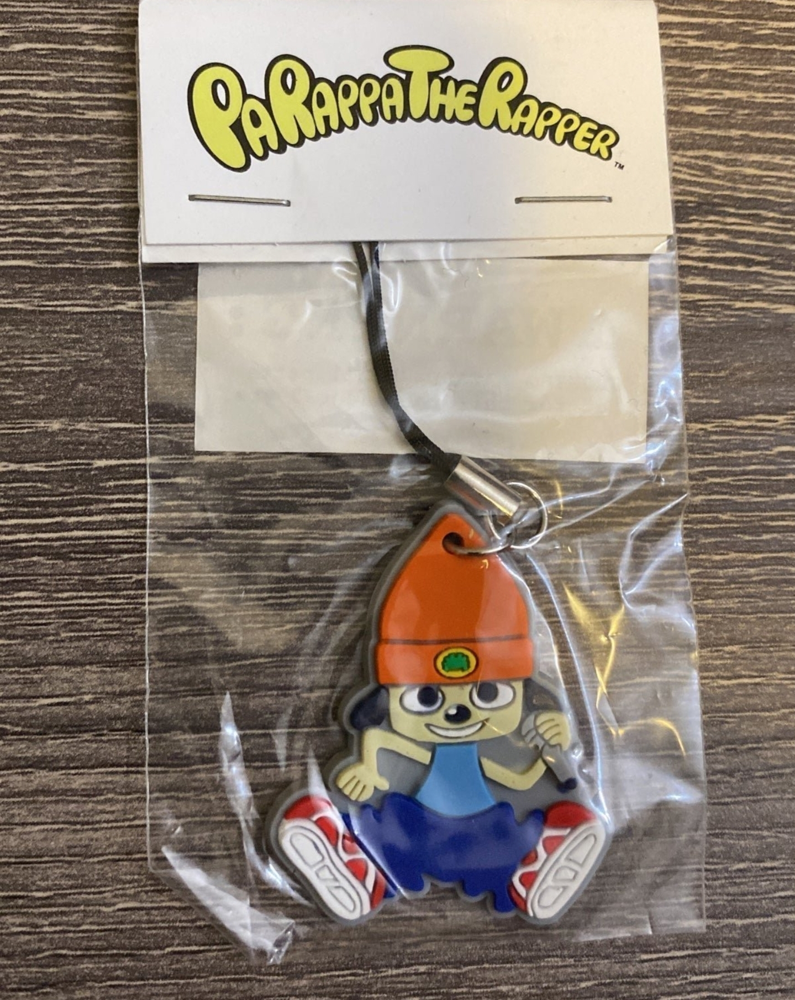
Sealed PaRappa die-cut rubber strap on its yellow "PaRappa The Rapper" header card.未開封のパラッパ ダイカットラバーストラップが、黄色い「PaRappaTheRapper」のヘッダーカードに封入されている。

"Lamp Strap with Mascot" — PaRappa light-up phone strap on its blue microphone-themed retail card.「Lamp Strap with Mascot」。マイクをモチーフにした青い台紙に、点灯ギミック付きのパラッパ携帯ストラップが封入されている。
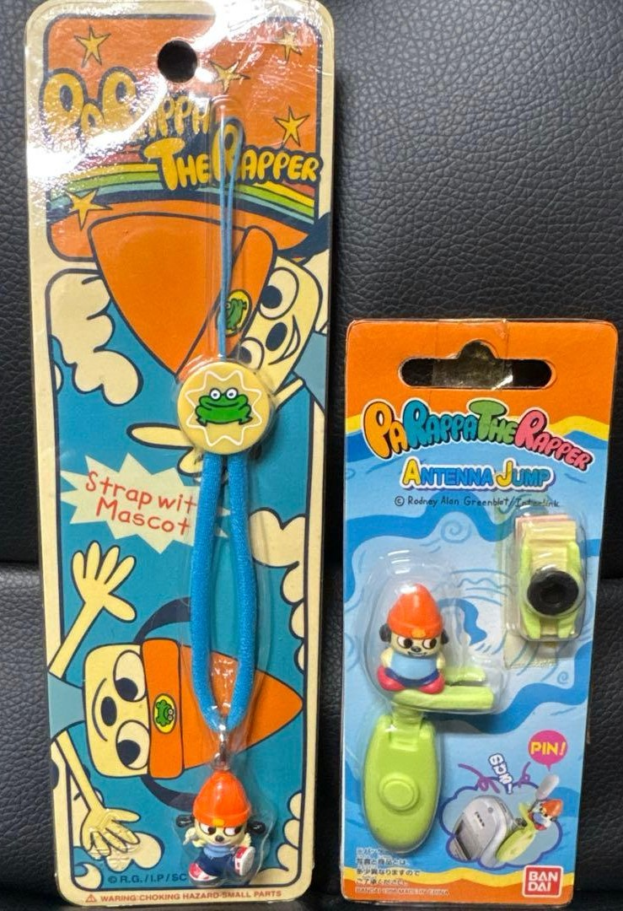
Pair of sealed accessories — SCP "Strap with Mascot" beanie pendant (left) and Bandai "Antenna Jump" PaRappa antenna charm (right).未開封の2点アクセサリーセット。左はSCPの「Strap with Mascot」ビーニーペンダント、右はバンダイの「Antenna Jump」パラッパ アンテナチャーム。
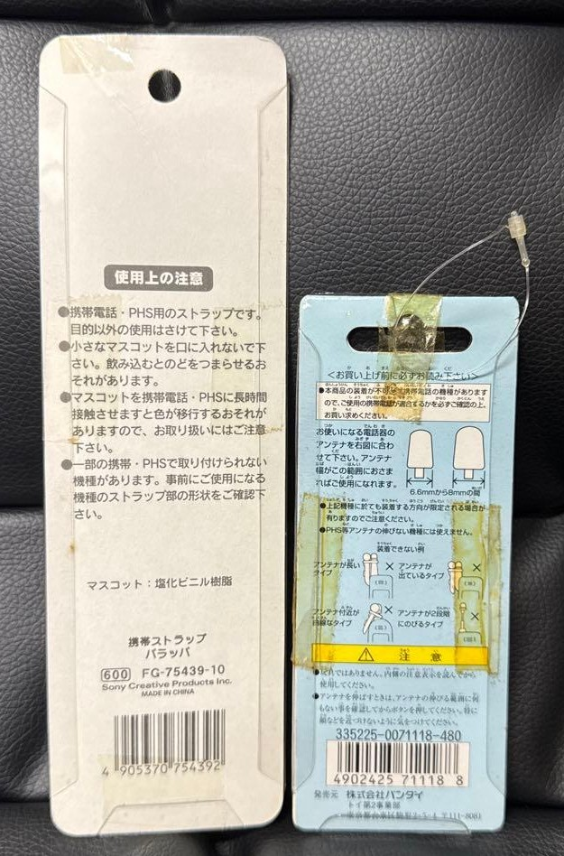
Reverse of both cards, showing SCP code FG-75439-10 for the strap and Bandai's antenna-fit instructions for the Jump charm.両カードの裏面で、ストラップ側にはSCP品番FG-75439-10、アンテナジャンプ側にはバンダイのアンテナ取付説明が確認できる。

SCP "Fastener Accessory" — a PaRappa concert-scene zipper-pull charm for clipping onto bag and jacket zips.SCPの「Fastener Accessory」。バッグやジャケットのファスナーに取り付けるための、パラッパライブシーン柄のジッパープルチャーム。
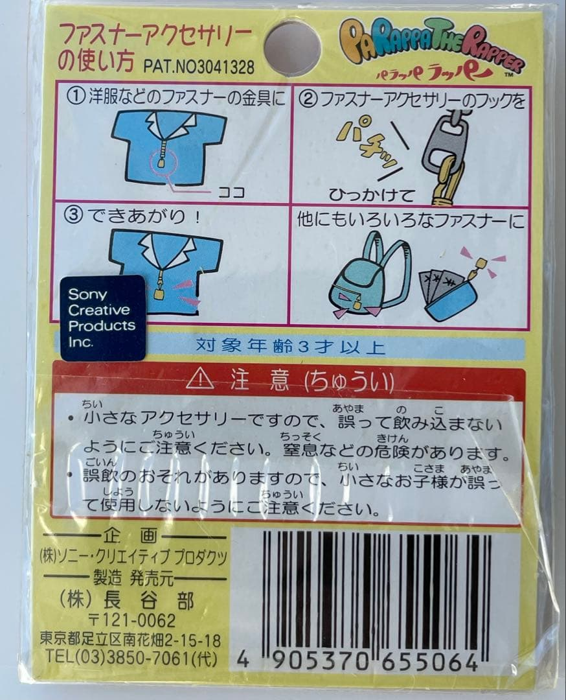
Back of the Fastener Accessory card with attachment diagrams and SCP patent reference No. 3041328.Fastener Accessoryカードの裏面で、取付図解とSCP特許番号 No. 3041328 が記載されている。

"Flash Keyholder" — a PJ Berri figure with light-up shades on a ball chain, mounted on a card showing the full main cast.「flash keyholder」。サングラスが光るギミック付きのPJベリーフィギュアがボールチェーンに取り付けられ、メインキャスト勢揃いの台紙に封入されている。
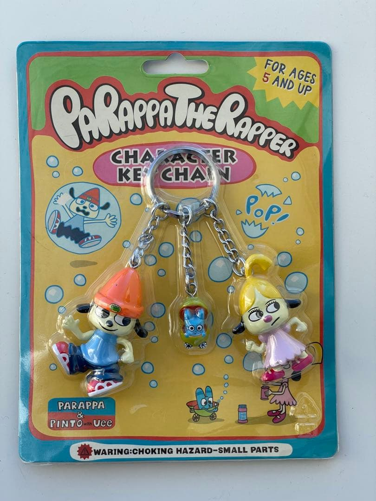
"PaRappa The Rapper Character Keychain" three-figure set — PaRappa, PJ Berri, and Sunny Funny on a single split ring.「PaRappaTheRapper Character Keychain」3体セット。パラッパ、PJベリー、サニー・ファニーが1つのキーリングに連結されている。
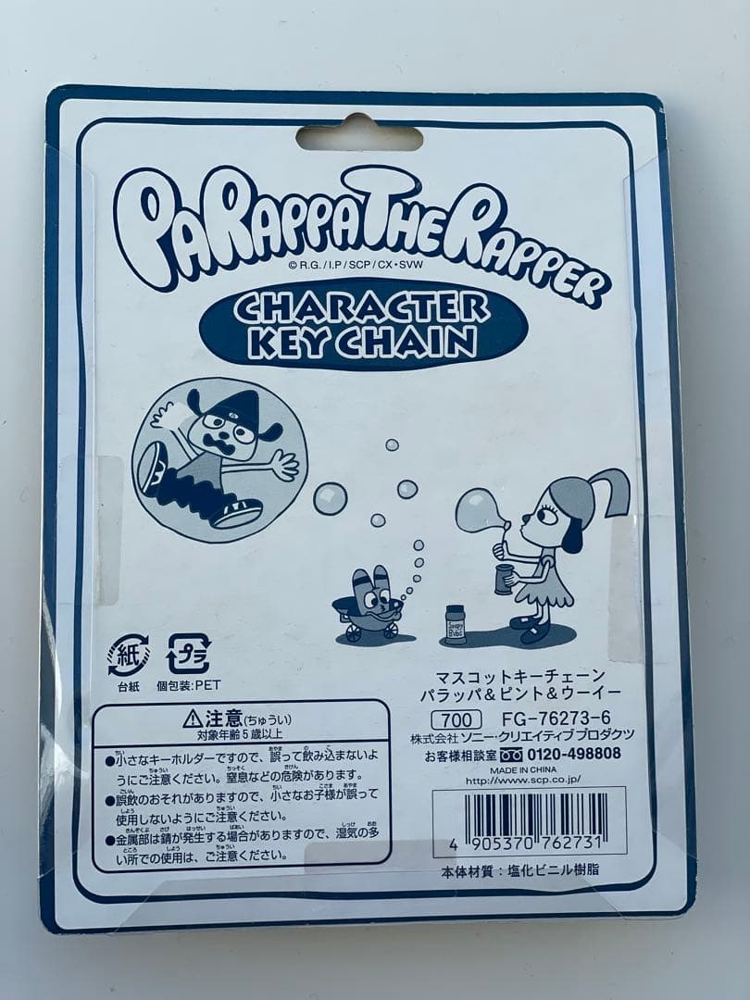
Back of the keychain card with SCP code FG-76273-6 and a small Katy-Kat-and-PJ-Berri illustration.キーチェーンカード裏面で、SCP品番FG-76273-6と、ケイティ・キャットとPJベリーの小さなイラストが配されている。
— PJ BERRI WRIST MOUSE MASCOT —— PJベリー リストマウスマスコット —
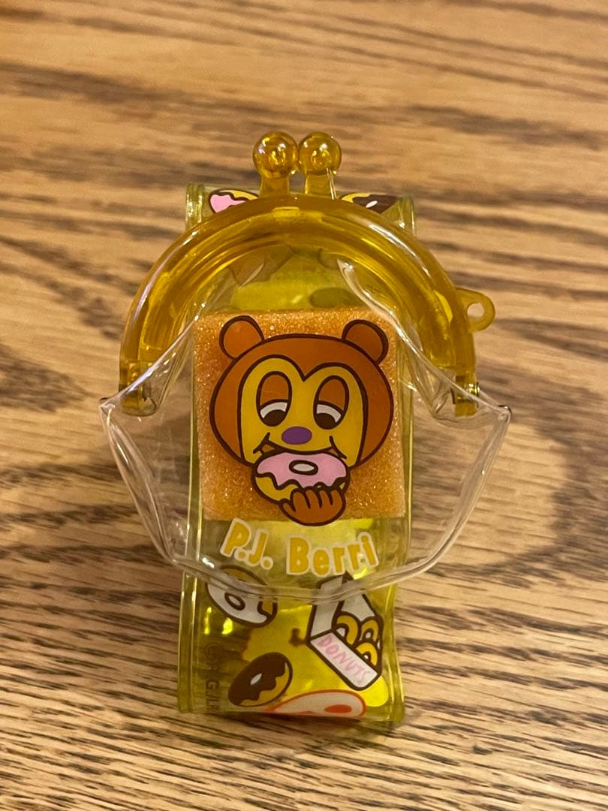
Yellow translucent rubber wrist mascot containing a small PJ Berri figure inside the donut-themed window.黄色いクリアラバー製のリストマスコットで、ドーナツ柄の窓の中に小さなPJベリーのフィギュアが収められている。
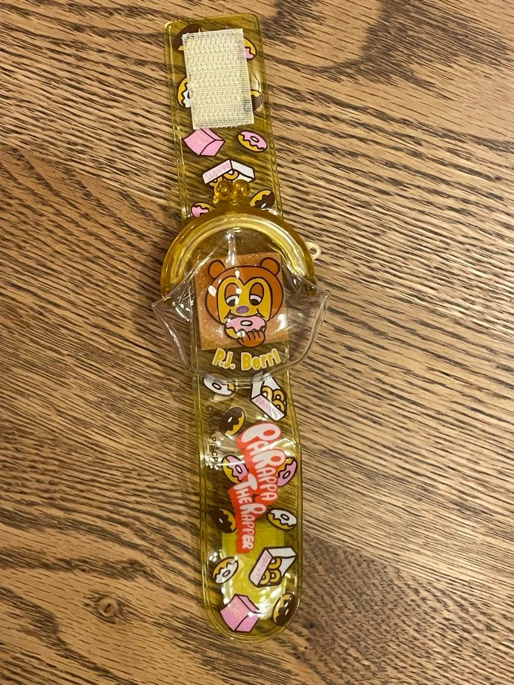
Full wrist-strap view of the PJ Berri "Catchy" mouse mascot with its donut-and-cookie pattern band.PJベリーの「Catchy」マウスマスコットのリストバンド全景。ドーナツとクッキー柄のバンド全体が見える。

Same wrist mascot still factory-sealed inside its plastic display sleeve.同じリストマスコットが、未開封の状態でプラスチックの陳列スリーブに封入されている。

Reverse of the package with SCP code FK-70929-10 and Japanese usage cautions for "PaRappa & PJ".パッケージ裏面で、SCP品番FK-70929-10と「パラッパ＆PJ」の日本語注意書きが記載されている。
— MOUSEPET COMPUTER MOUSE SET —— マウスペット コンピューターマウスセット —
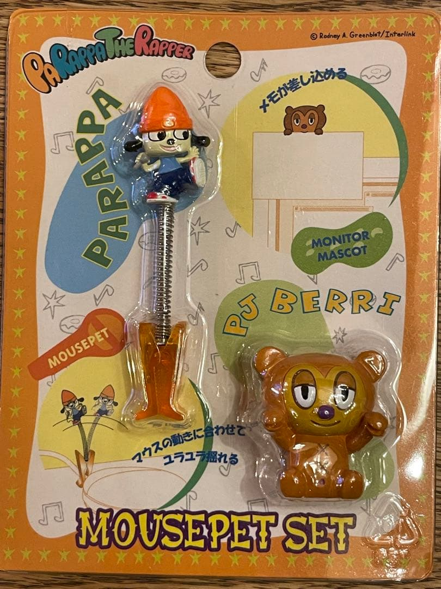
"Mousepet Set" pairing a PaRappa pen-style computer mouse with a small clear-amber PJ Berri monitor-clip mascot.「MOUSEPET SET」。ペン型のパラッパ コンピューターマウスと、モニター固定用の小さなクリアアンバー製PJベリーマスコットがセットになっている。
— STATIONERY: MEMO, ERASERS, STICKERS —— 文房具：メモ・消しゴム・シール —
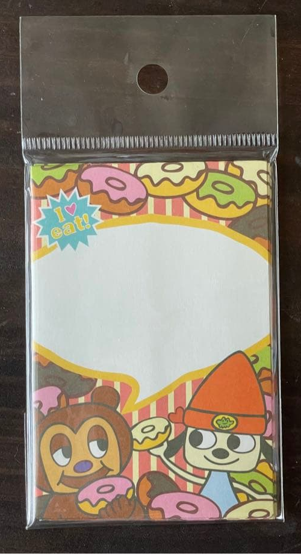
Sealed PaRappa memo pad (left) alongside the "PaRappa The Rapper Mini Eraser" blister of bone-shaped erasers (right).未開封のパラッパ メモパッド（左）と、骨型ミニ消しゴムが封入された「PaRappaTheRapper Mini Eraser」ブリスター（右）。
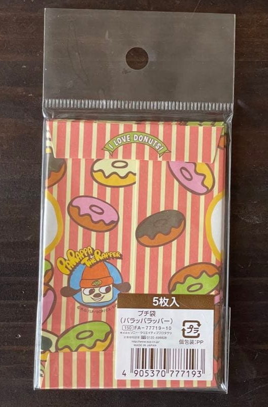
Reverse of both stationery packs with the candy-stripe pattern and SCP product codes.両ステーショナリーパックの裏面で、キャンディストライプ柄とSCPの品番表記が確認できる。

Isolated front of the "PaRappa The Rapper Mini Eraser" blister with four white PaRappa-shape mini erasers held to the card.「PaRappaTheRapper Mini Eraser」ブリスターの正面ビュー。白いパラッパ型ミニ消しゴム4個が台紙に並んで固定されている。

Reverse of the Mini Eraser blister with the SCP code FK-76249-10 and the "材質：粘土ゴム" (clay-rubber) material note.Mini Eraserブリスターの裏面で、SCP品番FK-76249-10と「材質：粘土ゴム」の素材表記が記載されている。

"Rolled Seal" character sticker roll (left) paired with a "PJ Berri Mixed Seal" die-cut sticker pack (right).キャラクターシールロール「Rolled Seal」（左）と、PJベリー柄ダイカットシール詰め合わせ「PJ Berri Mixed Seal」（右）のセット。
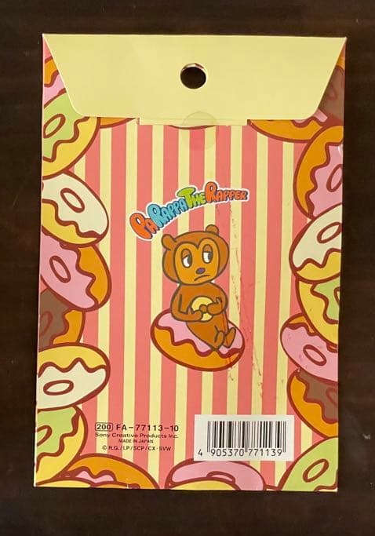
Backs of both sticker packs with the SCP licence stamp and Japanese-market product info.両シールパックの裏面で、SCPライセンススタンプと国内向け商品情報が記載されている。
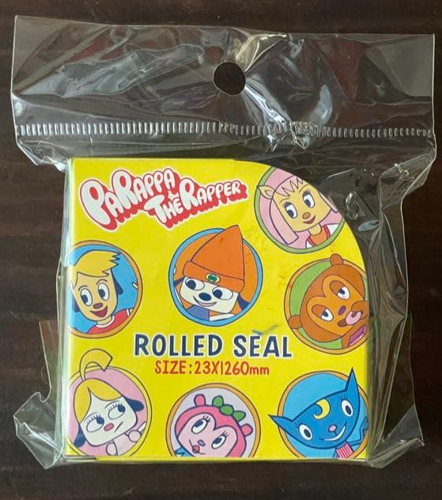
Isolated front of the "Rolled Seal" sticker roll header card with the circular character portrait line-up.「Rolled Seal」シールロールのヘッダーカード正面ビューで、円形のキャラクター肖像が並ぶ。
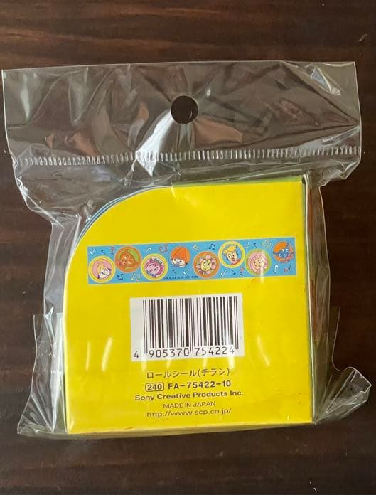
Reverse of the same Rolled Seal pack, showing the plain yellow back panel and barcode strip.同Rolled Sealパックの裏面で、無地の黄色い裏面パネルとバーコードストリップが確認できる。
— MUSIC GIFT CARDS —— ミュージックギフトカード —
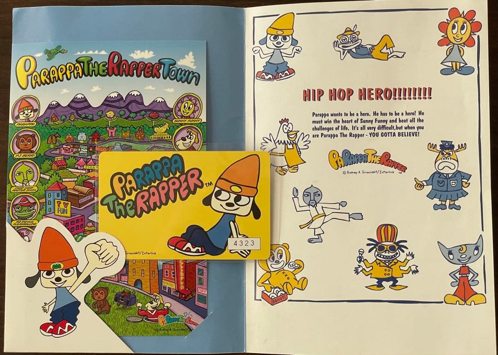
Music Card presentation folder opened to its "HIP HOP HERO!!!!!!!!" character spread.ミュージックギフトカード台紙を開いた状態で、「HIP HOP HERO!!!!!!!!」と題されたキャラクター見開きページが現れる。

Outer cover of the same folder, themed to the "Music Card" PaRappa stage scene.同台紙の外側カバーで、「ミュージックカード」のパラッパのステージシーンが描かれている。

Yellow ¥1,000 PaRappa Music Card with magstripe and individual serial 4323.黄色い額面1,000円のパラッパ ミュージックカードで、磁気ストライプと個別シリアル番号「4323」付き。
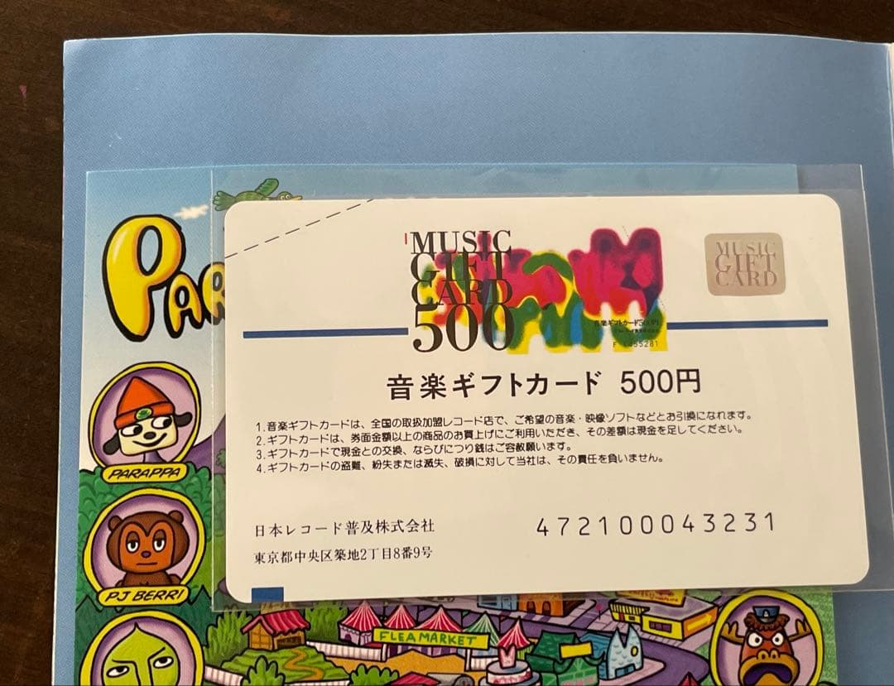
¥500 PaRappa Music Gift Card variant printed with the full cast on its character-bordered sleeve.額面500円のパラッパ ミュージックギフトカードで、キャラクターで縁取られたスリーブにメインキャスト勢揃いがプリントされている。
— PARAPPA FESTIVAL FACE MASK —— パラッパ お面 —

Vacuum-formed plastic PaRappa festival face mask in the classic Japanese summer-stall omen style.日本の夏祭り屋台で売られる定番のお面スタイルで作られた、真空成形プラスチック製のパラッパお面。
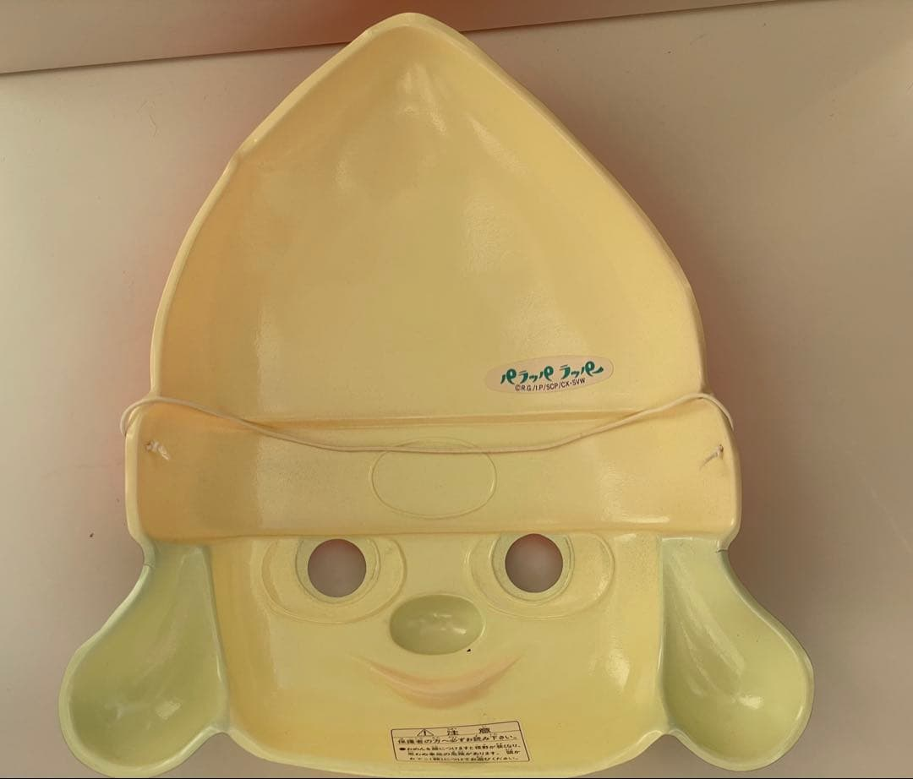
Reverse of the mask, showing the eye holes and the maker's name embossed on the inside.お面の裏面で、目穴と内側に押し型で入った製造者名が確認できる。
— DAKKO-CHAN INFLATABLES & SOFT TOYS —— だっこちゃん＆やわらかソフトトイ —
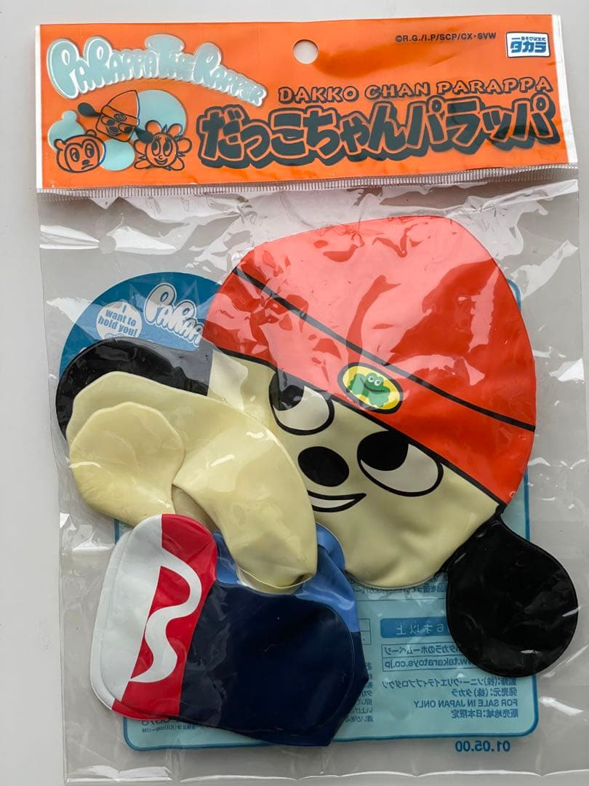
"Dakko-chan PaRappa" — a vinyl inflatable arm-hugger doll modelled on the classic Japanese Dakko-chan toy.「だっこちゃんパラッパ」。日本の定番玩具「だっこちゃん」をモチーフにしたビニール製エアー人形で、腕に抱きつかせて遊べる仕様。
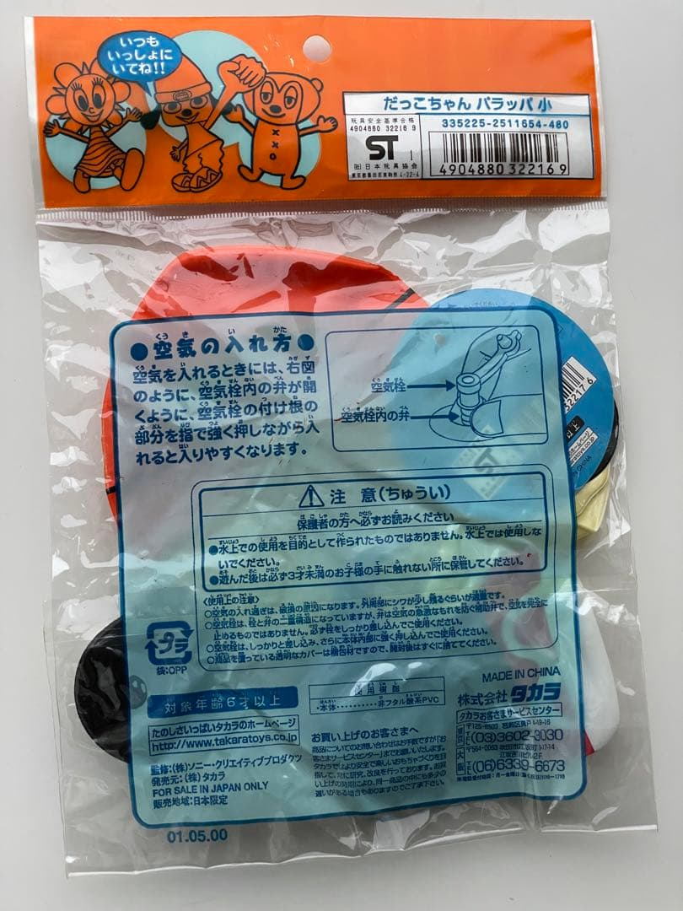
Reverse of the Dakko-chan PaRappa pack with inflation diagrams and Japanese safety cautions.だっこちゃんパラッパ パッケージ裏面で、空気の入れ方の図解と日本語の使用上の注意が記載されている。
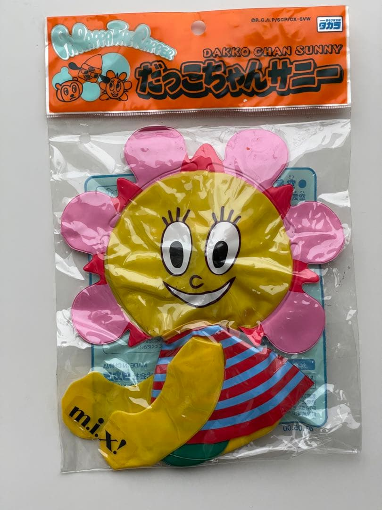
"Dakko-chan Sunny Funny" — companion vinyl inflatable in the same Dakko-chan format.「だっこちゃんサニー」。同じだっこちゃんフォーマットの対になるビニールエアー人形。
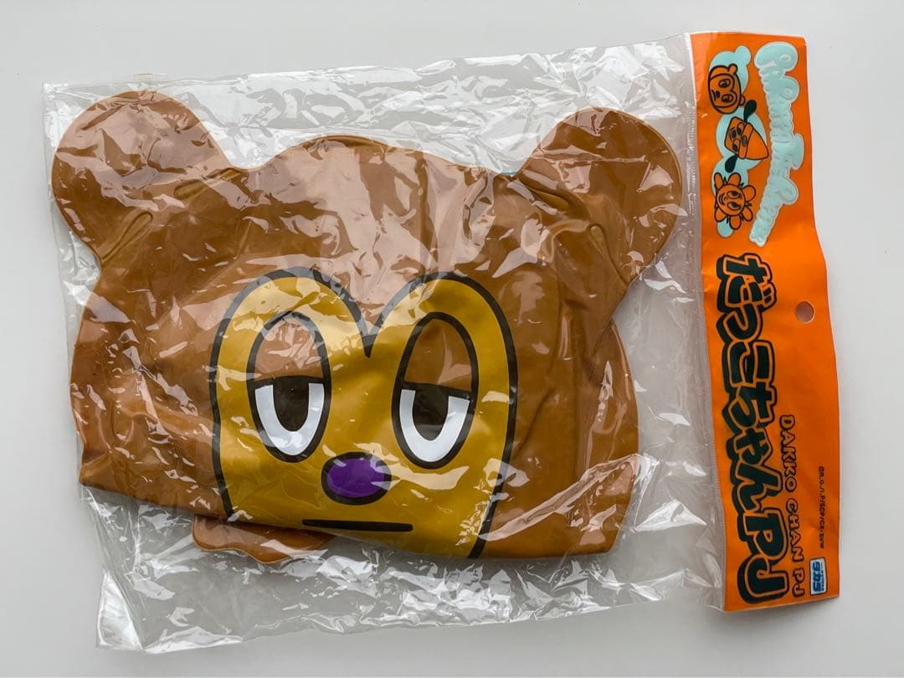
"Yawaraka PJ" — a squishy soft-vinyl PJ Berri head sealed with its orange "やわらか" (soft) hang-tag.「やわらかPJ」。柔らかいソフトビニール製のPJベリー頭部で、オレンジの「やわらか」下げ札が付いた未開封状態。
— TISSUE PACKS —— ポケットティッシュ —

Collection of "PaRappa The Rapper Tissue Set" mini-packs featuring PaRappa, Sunny Funny, PJ Berri, and Katy Kat.「PaRappaTheRapper Tissue Set」のミニポケットティッシュ各種。パラッパ、サニー・ファニー、PJベリー、ケイティ・キャットの絵柄が揃う。

Closer view of the same set, showing the orange/blue/green/pink character-banner colourways used across the line.同セットの拡大ビュー。シリーズ全体で使われているオレンジ・ブルー・グリーン・ピンクのキャラクターバナー配色がよく分かる。
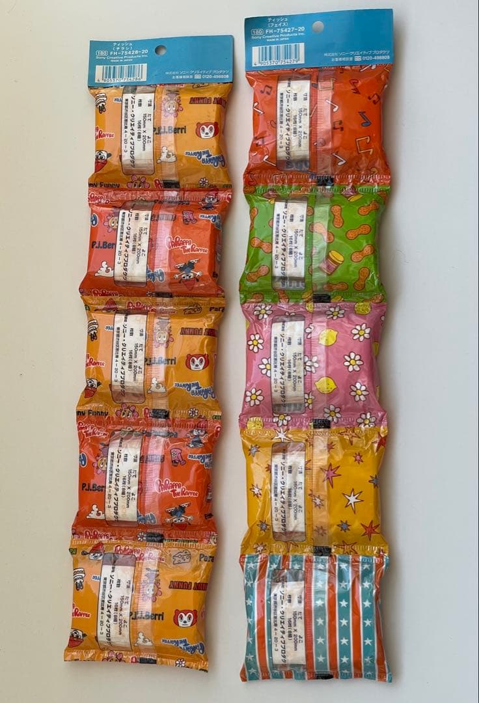
Reverse of the tissue packs with the SCP product label and barcode strip on each character variant.ティッシュパック裏面で、各キャラクターバージョンにSCPの商品ラベルとバーコードストリップが付いている。
— CHARACTER ADHESIVE BANDAGES —— キャラクター絆創膏 —

Plastic bandage carry-cases printed with PaRappa (left) and PJ Berri (right) cover graphics.プラスチック製の絆創膏ケースで、左にはパラッパ、右にはPJベリーの表紙グラフィックがプリントされている。

Bandage case opened to reveal the printed adhesive strips and a yellow refill pouch inside.絆創膏ケースを開けた状態。プリント絆創膏と詰め替え用の黄色いリフィルパウチが収まっている。

Individual bandage strips laid out by character — PaRappa, Sunny Funny, PJ Berri, and Katy Kat designs.キャラクター別に並べた絆創膏。パラッパ、サニー・ファニー、PJベリー、ケイティ・キャットの各デザインが揃う。
— LIGHT & SOUND WAND —— ライト＆サウンドウォンド —
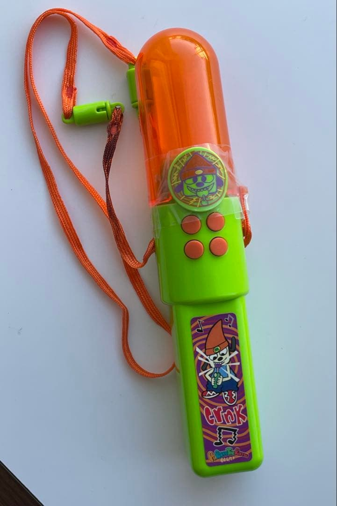
Battery-powered PaRappa light-and-sound wand toy with translucent orange tip, three sound buttons, and a wrist lanyard.電池式のパラッパ ライト＆サウンドウォンド玩具。半透明オレンジの先端、3つのサウンドボタン、ストラップ付きリストランヤードを備える。

Close-up of the wand grip with the round green PaRappa face emblem above the three orange action buttons.ウォンドのグリップ部分のクローズアップ。3つのオレンジボタン上部に、丸いグリーンのパラッパ顔エンブレムが配されている。

Side view of the wand showing the battery housing molded into the green plastic body.ウォンドの側面ビューで、グリーンのプラスチックボディに一体成形された電池ボックスが確認できる。
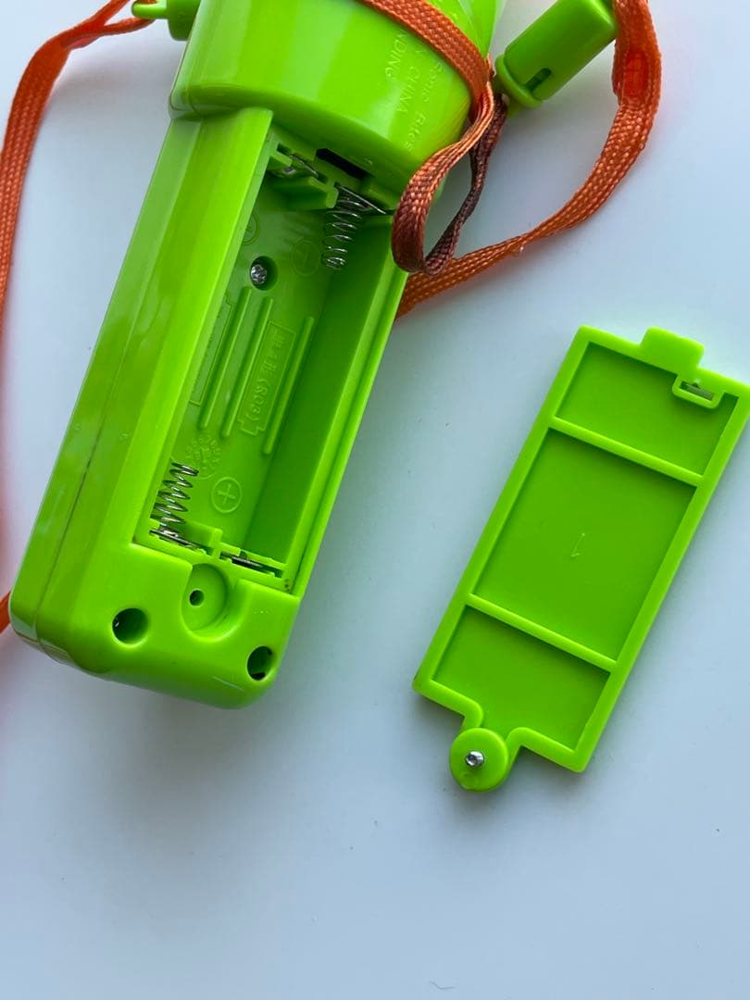
Battery door removed to show the AA cell compartment that powers the lights and sound effects.電池蓋を外した状態で、ライトとサウンド効果を駆動する単3電池ボックスが現れる。
— PUZZ-CLOCK 135-PIECE PUZZLE CLOCK —— パズ・クロック 135ピースパズル時計 —
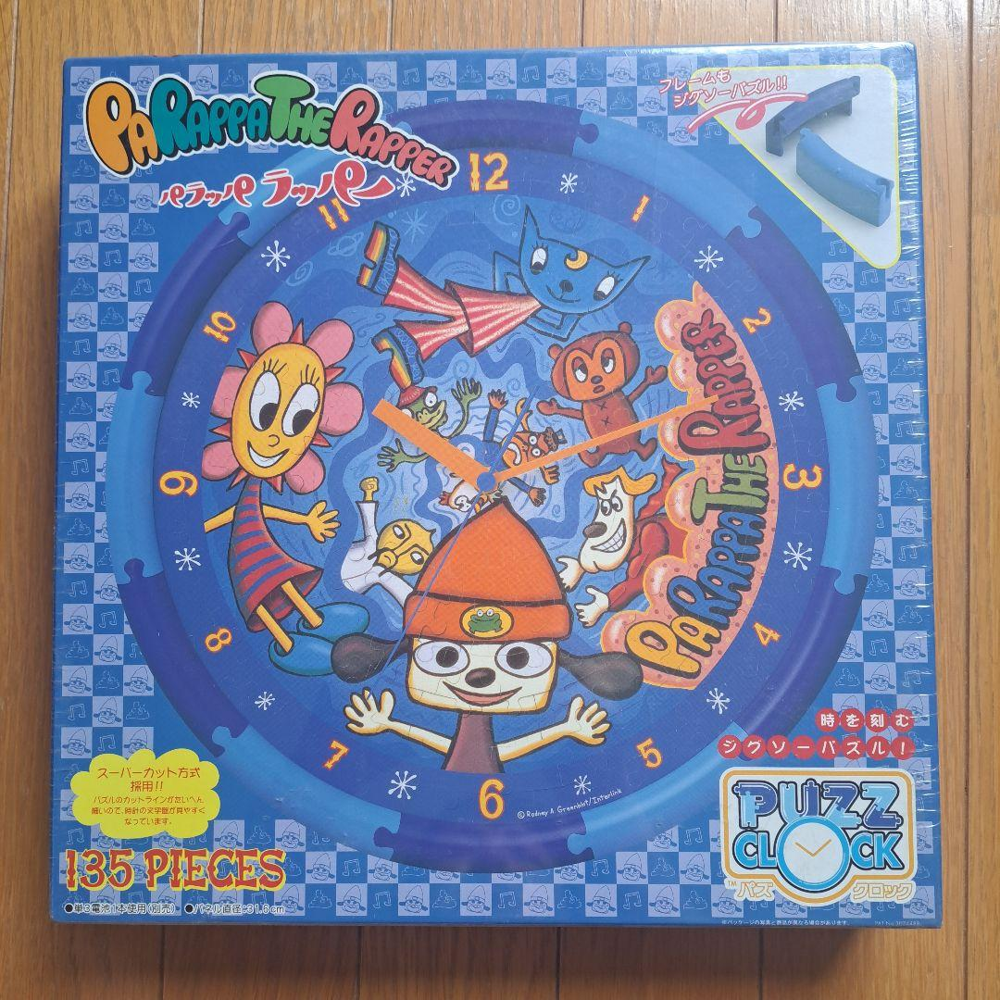
Sony Creative Products "Puzz Clock" — a 135-piece jigsaw puzzle that assembles into a working PaRappa cast wall clock.ソニー・クリエイティブプロダクツの「PuzzClock」。組み上げるとパラッパ集合柄の壁掛け時計として機能する135ピースのジグソーパズル。
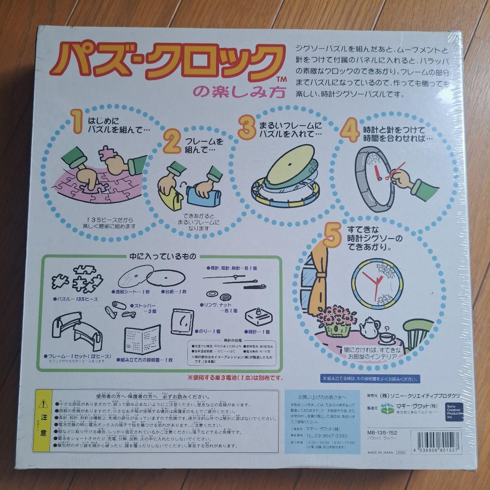
Box back with the five-step assembly diagram for fitting the puzzle into its movement-equipped clock frame.ボックス裏面で、ムーブメント付き時計フレームへのパズル組み込み方法を5ステップで図解。

Side panel of the still-sealed Puzz Clock box with the "時を刻むシグソーパズル!!" tagline.未開封のPuzzClockボックス側面で、「時を刻むシグソーパズル!!」のキャッチコピーが入る。
— BANDAI TAPE CLUB CAPSULE WASHI TAPES —— バンダイ Tape Club カプセル マスキングテープ —
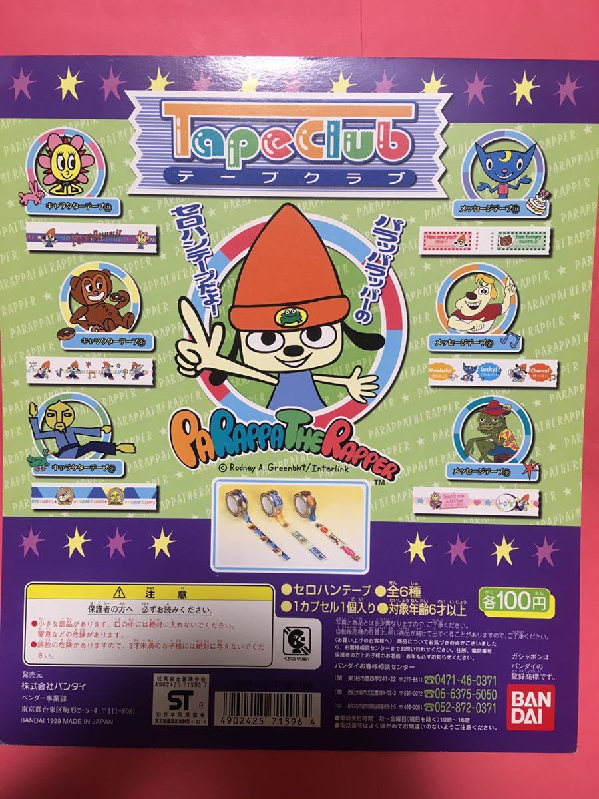
The gashapon machine display card — Bandai, 1999, made in Japan. It lays out the full lineup: three キャラクターテープ (character tapes) featuring PaRappa, Sunny Funny, PJ Berri and Katy Kat, and three メッセージテープ (message tapes) printed with phrases like "How are you?", "Wonderful!", "Lucky!" and "Send me a letter". The fine print confirms 全６種 at 各100円, one tape per capsule, ages 6 and up — and that these are セロハンテープ (cellophane tape) rather than true washi.ガシャポン本体用のディスプレイ台紙。バンダイ、1999年日本製。パラッパ、サニーファニー、PJベリー、ケイティ・キャットを描いたキャラクターテープ３種と、「How are you?」「Wonderful!」「Lucky!」「Send me a letter」などの文字が入ったメッセージテープ３種で、ラインナップ全体が一目で分かる。下部には「セロハンテープ」「全６種」「１カプセル１個入り」「対象年齢６才以上」「各100円」の表記が並ぶ。

Bandai gashapon "PaRappa The Rapper Tape Club" — six washi-tape rolls plus a header card, each capsule still factory sealed.バンダイのカプセルトイ「PaRappaTheRapper Tape Club」。6種のマスキングテープロールとヘッダーカードが、それぞれ未開封のカプセルに封入されている。
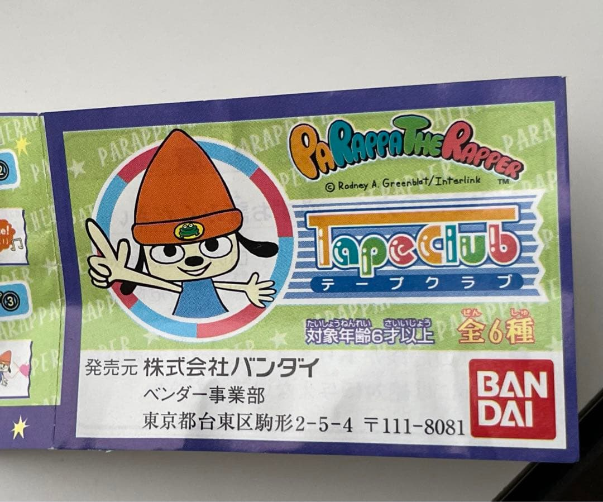
Header card naming the series "PaRappa The Rapper Tape Club" with Bandai's "全6種" (six types) callout.「PaRappaTheRapper Tape Club」シリーズ名と、バンダイの「全6種」表記が入ったヘッダーカード。

One roll uncapped to show the printed pattern of small character labels and stamp icons running along the tape.1ロールを取り出した状態で、小さなキャラクターラベルとスタンプアイコンが連続するテープの印刷パターンが確認できる。
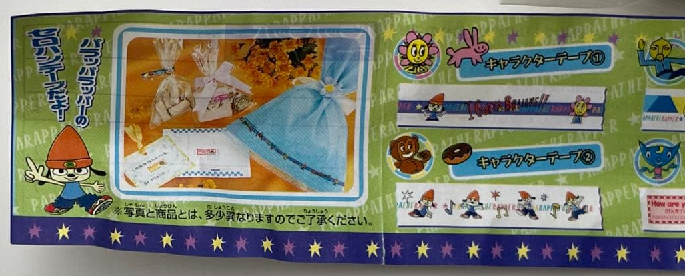
Inset panel from the header card showing notebook-decoration use cases for the tapes.ヘッダーカード内のサンプルパネルで、ノート装飾の使用例が掲載されている。
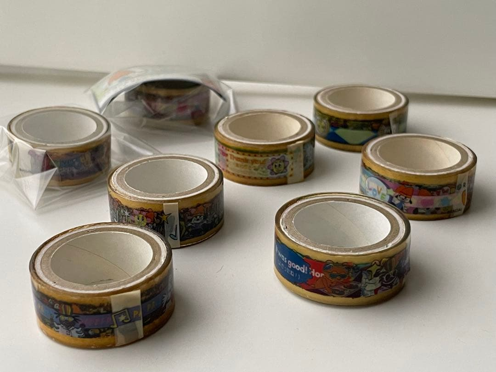
Complete six-roll set assembled together, completing the Tape Club gashapon line.6ロール全種をまとめて並べた状態で、Tape Clubガシャポンの全コンプリートセット。
— AU C3055 PARAPPA CELLPHONE —— au C3055 パラッパ携帯電話 —
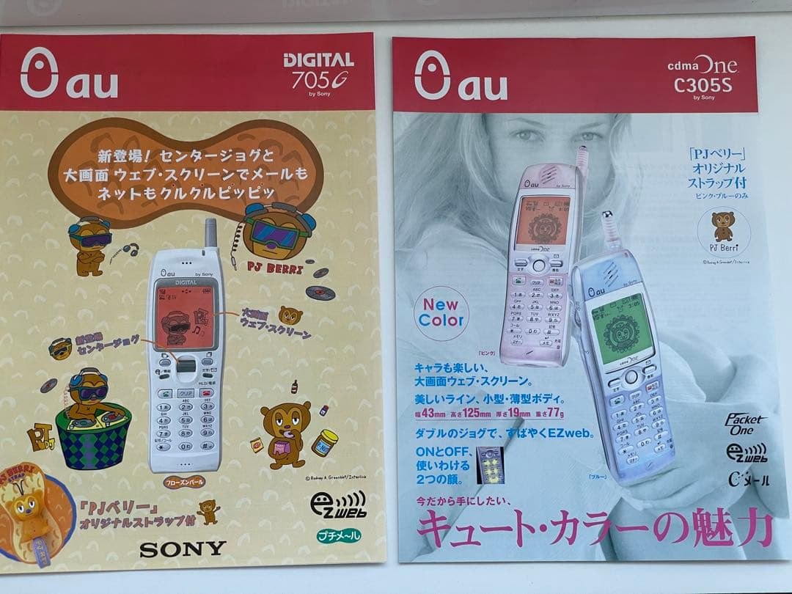
Japanese au catalogue spread for the Sony C3055 PaRappa cellphone — a co-branded handset with PaRappa-themed wallpapers and ringtones.ソニー製 C3055 パラッパ仕様携帯電話の au カタログ見開きページ。パラッパ柄の待受画面と着信メロディを搭載したコラボハンドセット。
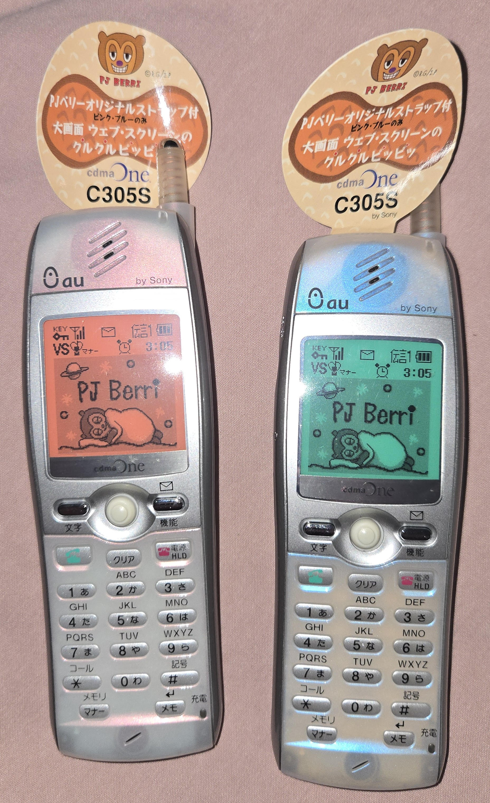
A matched pair of the au C305S (by Sony) cdmaOne handsets in pink and blue, each with the PJ Berri original strap and PJ Berri screen wallpaper.ピンクとブルーの au C305S（ソニー製）cdmaOne 携帯電話のペア。それぞれ PJ ベリーのオリジナルストラップと PJ ベリーの待受画面付き。
— EVENT MASCOT COSTUMES —— イベント着ぐるみ —
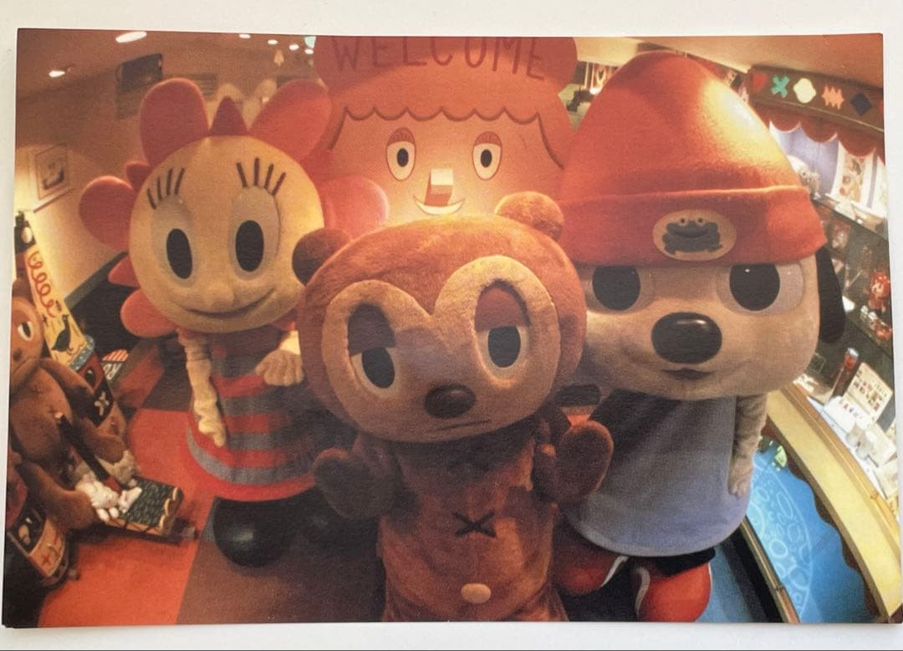
In-store event photo of the Katy Kat, PJ Berri, and PaRappa walk-around mascot suits beneath a "Welcome" banner.店頭イベントの記録写真。「Welcome」のバナーの下に、ケイティ・キャット、PJベリー、パラッパの着ぐるみマスコットが並んでいる。
— DIE-CUT FACE HANGTAG —— ダイカットフェイスハングタグ —
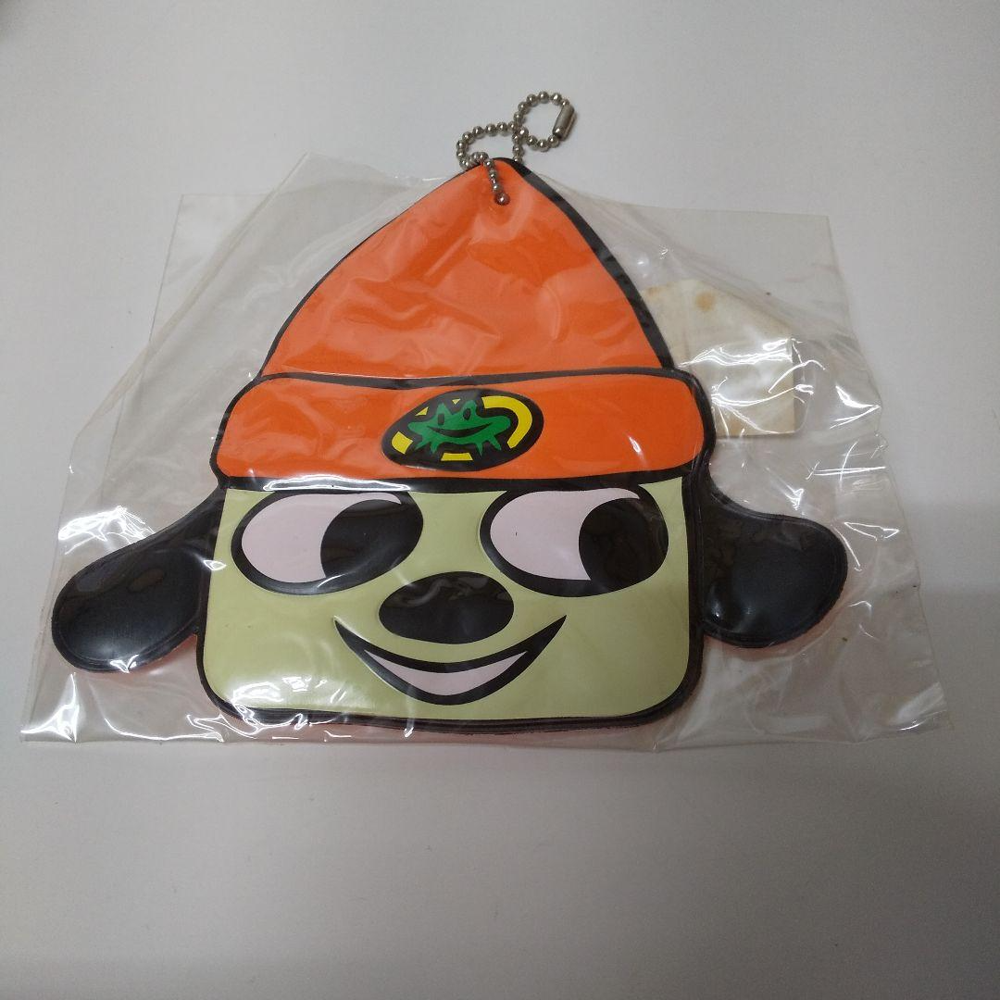
Sealed PaRappa face-shaped die-cut vinyl hangtag with attached ball-chain, ready to clip onto a bag.未開封のパラッパ顔型ダイカット ビニールハングタグ。ボールチェーン付きで、バッグなどに取り付けられる仕様。

Reverse of the same hangtag showing the orange backing and Japanese retail-shop barcode sticker.同ハングタグの裏面で、オレンジの裏地と国内小売店のバーコードシールが確認できる。
— PROMO PRIZE LINEUP —— プロモーション景品ラインナップ —
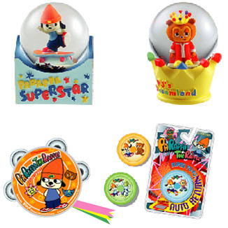
Promotional prize-line image showing the "PaRappa Superstar" and "PJ's Dreamland" snow globes alongside a PaRappa tambourine and "Auto Roll" yo-yo set.プロモーション景品ラインナップの紹介画像。「PaRappa Superstar」と「PJ's Dreamland」のスノードームに、パラッパ柄タンバリンと「Auto Roll」ヨーヨーセットが並ぶ。